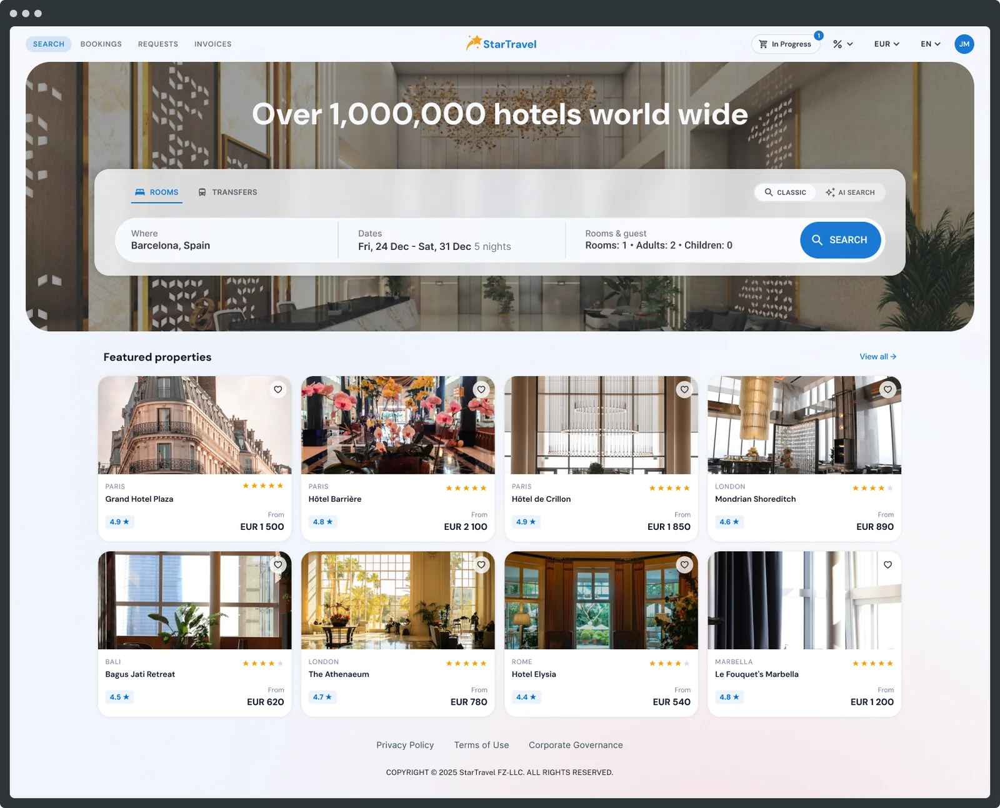

B2B Booking Platform
B2B travel integration platform for agencies and full-cycle booking providers: hotels, transfers, visas, payment.
- Client
- EU-based international platform
- Role
- Senior Product Designer, with a Design Lead and another designer
- Scale
- Legacy product, 100,000+ users
Outcome
Incremental redesign of a complex legacy product; tracked more users completing the search flow and conversion improvements across redesigned flows.
2 deep dives · 7 screens